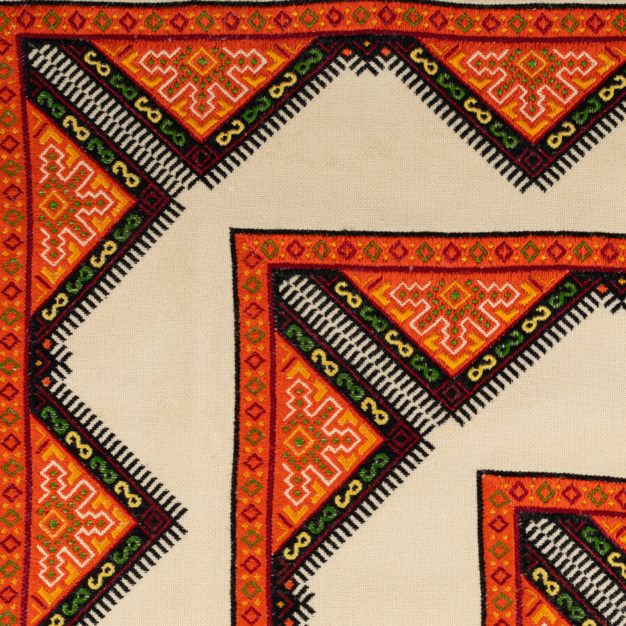

Side by Side: Color and Textiles
Drawing together the works of Chicago-based Ukrainian American artists, Anna Kuczma (1910-2002) and her daughter Lialia Kuchma (b. 1943), Side by Side: Color and Textiles situates modern artists’ experiments with color in textile histories, practices, and technologies. To further elucidate these connections, the show also includes quilted and embroidered works by fellow Chicago artists Liz Barr (b. 1993) and Charlie Kolodziej (b. 1999) as well as dyestuffs and related objects from the Joel Snyder Materials Collection.
All four artists’ works depend on the grid as well as a palette of colors made possible through innovations in textile dyeing, particularly the introduction and subsequent proliferation of synthetic dyes in the mid to late nineteenth century. In her embroidery, Kuczma relied on the woven ground and its perpendicular interlace of warp and weft, as a foundational geometry for cross-stitching. The tiny x-shapes that comprise the designs tessellated, like pixels, in varied hues across that gridded ground. Kuchma weaves the grid that forms her tapestries, each pass of the weft over or under the warp constitutes a colorful square, part of a field, plane, or line within the composition.
Side by Side: Color and Textiles features work by Anna Kuczma (1910-2002) and Lialia Kuchma (b. 1943) alongside fellow Chicago artists Liz Barr (b. 1993) and Charlie Kolodziej (b. 1999).
Side by Side: Color and Textiles is curated by Amba Beattie, Emily Cheng, Amelia Cook, Defne Ergoz, Arletha Greer, Fatima Hendricks, Bryn Herring, Iris Jing, Anju Lukose-Scott, Frances Millar, Lara Orlandi, Gabrielle Ortega, Brandon Pearce, Raina Tian, and Dr. Erica Warren
CWAC Exhibitions is organized by the Department of Art History’s Visual Resources Center. Additional support for this exhibition provided by the Master of Arts Program in the Humanities and Marz Community Brewing Co. Installation support, preparation, and fabrication provided by Noël Da, Libby Konjoyan, Evan Da Yu Ling, and Bradley Verhelle.